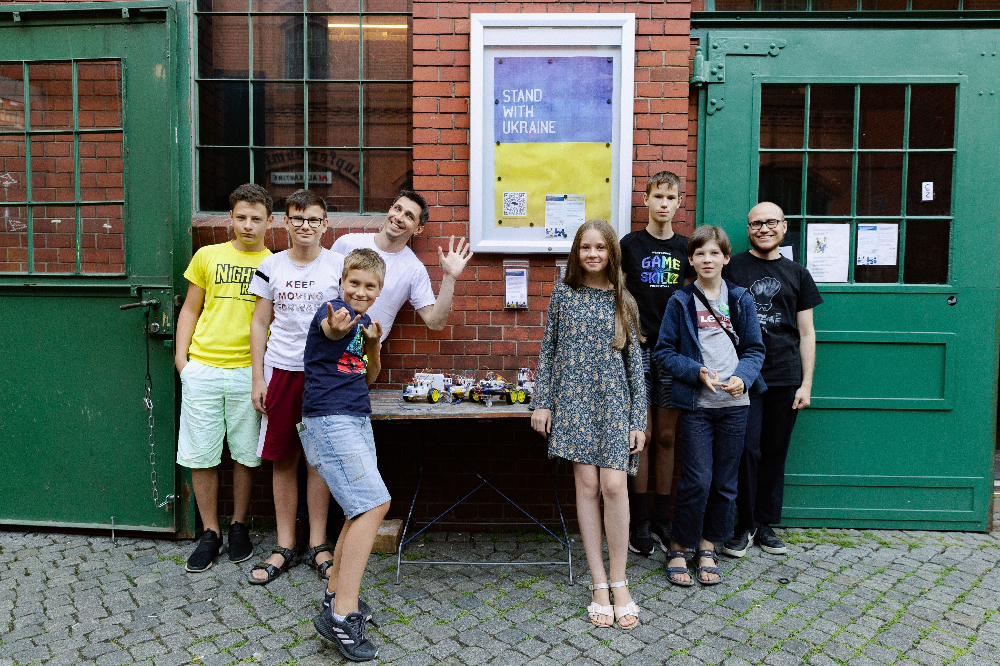
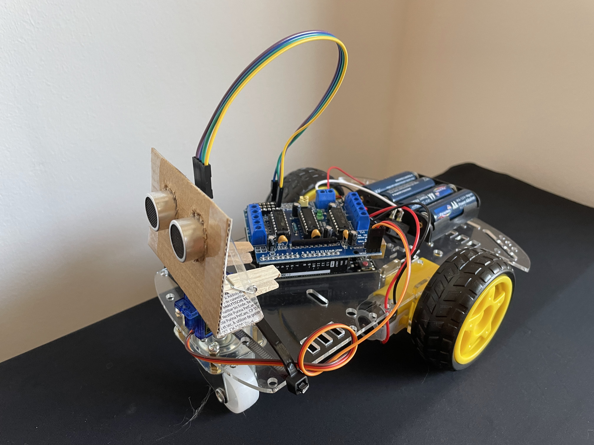
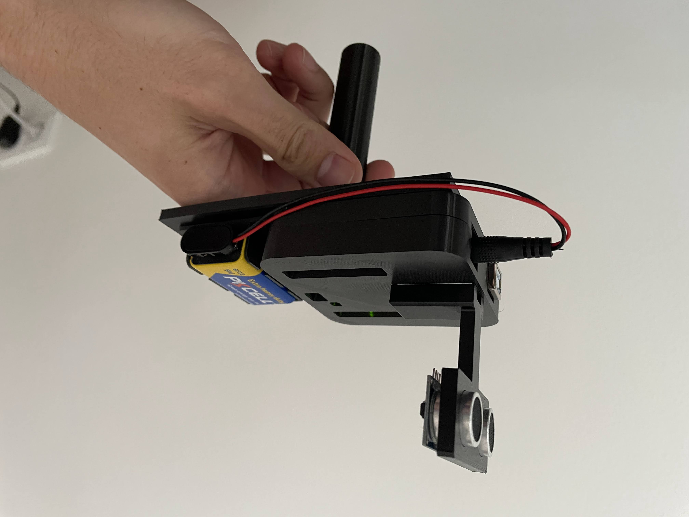
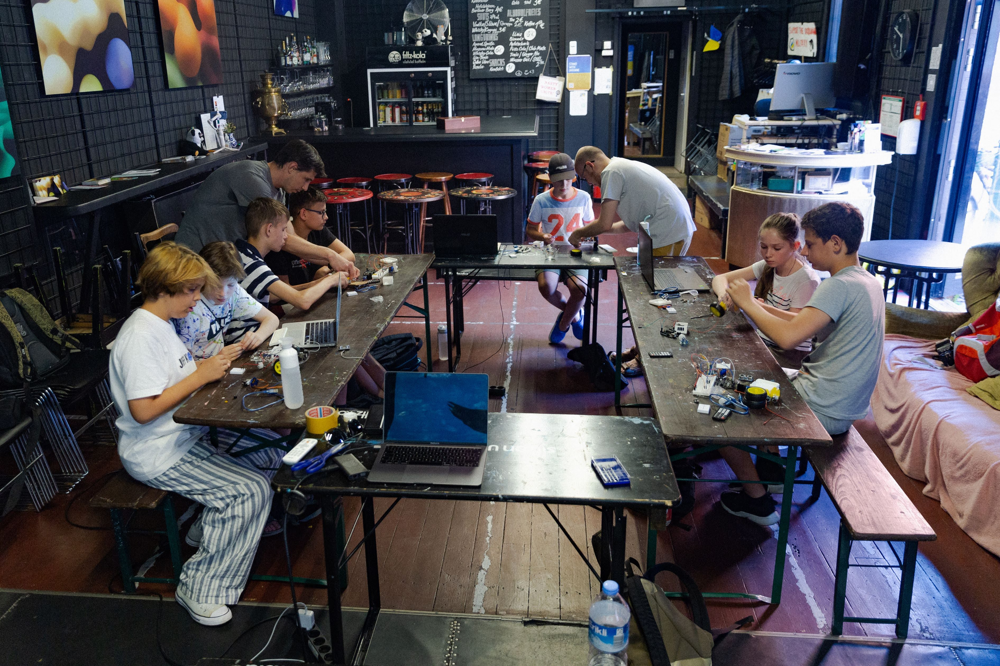
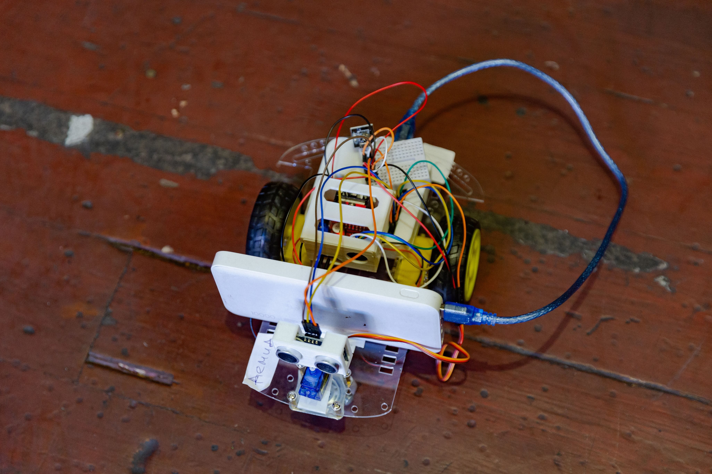

Learning to teach robotics

For the past two years, I’ve been running a robotics school for Ukrainian kids who came to Berlin after the invasion started. This is my first blog post in a series where I’ll share my experiences and some lessons learned along the way. I have two reasons for writing this. First, there’s a bit of a “dear-diary” element to it. This project has been a huge part of my life recently, but I haven’t taken the time to really process everything that’s happened since it began. Second, I hope someone out there might find it helpful to see the whole journey, not just a curated list of best practices (which is coming, stay tuned).
Idea and pitch
Describing everything I felt in the weeks following February 24, 2022, is impossible, but I remember one particular thought running through my mind: I need to do something. In retrospect, I realize that this - doing something - was pretty much the only way to stay sane. At some point, I stumbled upon PANDA Platforma’s Safe Space, which took place every Sunday. It was a chance for people who had left their homes to talk, get some psychological support, or receive help navigating the maze of German bureaucracy. There were also workshops for kids. That’s when it hit me: this was the setting to turn my stirring ideas about teaching into something useful.
A couple of years before that, I had tried my hand at mentoring in the Youth Hackathon Freiburg, a weekend-long maker workshop for kids and teenagers. I decided to use their format as a basis and pitch it as a multi-session course for kids and teenagers to PANDA.
At that point, all I had was a very vague impression of what the whole thing could look like. Namely:
- It had to be about robotics because robots are cool. You know, they move and stuff – kids should probably love it.
- It had to be fairly cheap in material costs, which meant no LEGO or other high-end brands as a platform.
That’s it. I prepared a short elevator pitch along those lines and presented it at PANDA. Everyone was generally supportive of the direction, so now I had to work out the details. Right after the pitch, Kostya, my soon-to-be partner in crime, approached me. He was a software engineer who liked the idea and had actually thought of something similar himself, but focused on game development. We had a short but productive brainstorming session, and decided to work together. That’s when the fun part started.
Preparation
First, we needed a concrete agenda. We decided to offer a course where kids would gradually build their own obstacle-avoiding robot. The first several sessions would cover the basics: the fundamentals of coding, working with DC motors, measuring distance with an ultrasonic sensor, and so on. In the second half of the course, the kids would combine these building blocks into a wheeled, obstacle-avoiding rover.
Second, we needed a hardware platform. Somewhat biased by my previous hackathon experience, we decided to go with Arduino. It seemed powerful enough for what we had in mind, had a huge enthusiast community around it, and was fairly cheap — especially if you buy clones. An unofficial Arduino starter set from Amazon, along with a 3-wheeled chassis, would cost less than $60, which was a perfectly reasonable price.
Of course, I started with a prototype before purchasing multiple sets.

At this point, I want to give a big thank you to my Bosch manager, Michael Pfeiffer. When I started, I approached him to see if Bosch would be willing to financially support my initiative. Michael was instantly sold on the idea. He asked how much I needed, and after I told him the amount, he just transferred it to my PayPal account. The most uncomplicated process ever. As far as I know, he asked the management team for donations afterward, so thanks also to everyone who chipped in. The initial equipment batch was bought with this money.
Third, we needed a software framework. This one was trickier. The course was planned to be roughly 10 weeks long with 2-hour weekly sessions, targeting 11-14-year-olds with no prior experience in programming. This effectively meant that C as a programming language was out of bounds if we realistically wanted to get to the fun stuff. Instead, we looked into block-based programming, like Arduino-compatible versions of Scratch or Blockly. Even though I was deeply impressed by how popular block programming had become, the available tools still seemed limited at best. Some of them were platform-specific, only working with certain microcontroller types and supporting a certain set of peripheral devices. Others were more generic but poorly designed and unreliable. In the end, we picked OttoBlockly, an IDE powering the Otto robot. It was an open-source environment with a reasonable set of functions, and it had versions for both Windows and Mac OS.
At the same time, I also started considering the idea of getting a 3D printer. It was clear that launching the course was perfectly possible without one. However, having one would elevate everything to a more professional level (note the magnificent cardboard-and-clothespin sensor mounting in the prototype) and enable us to design custom parts for robots. In the end, I gave in and purchased an Ender 3 V2 for about $250. It was quite capable, yet affordable enough to not suffer too much in case the whole enterprise did not work out. Looking back, I have to say this was one of the best decisions.
Launch
Finally, we were ready to launch. PANDA posted the invitation in some Ukrainian TG channels, and in less than 24 hours, our registration list was full. We asked everyone to bring their own laptops because providing computers for the course was too expensive. Kostya and I didn’t have time to plan the entire course in advance, so we only planned one session ahead.
I was extremely nervous, but everything worked out well. The kids were supportive and communicative. The hardware (mostly) worked. The software (mostly) worked.
In the first half of the course, which lasted 5 weeks, every session followed roughly the same structure. We started with a short presentation of the current topic, such as how to work with the ultrasonic sensor. Then, there were some small exercises followed by the final “project” — for example, a parktronic system that would beep differently depending on the distance. I even designed a handheld housing for that one.

There were a total of 10 participants, mostly working in groups of two. Fortunately, we didn’t admit more people because this was nearly the limit of what two mentors could reasonably handle. Because:
- Hardware and software are not perfect. When problems arose, we had to troubleshoot and fix them ourselves, which was sometimes neither straightforward, nor fast.
- The kids had little to no experience with programming and hardware, they required a lot of individual support.
Focusing on one group inevitably meant temporarily leaving others who might quickly get stuck. So, limiting the course to 10 participants (actually fewer at times due to sickness or missed sessions) turned out to be a good call.

Over the second half of the course we worked together to build the final robots. The basic goal was the same for every team: create an obstacle-avoiding rover capable of autonomously navigating without collisions. Of course, every team ended up with a slightly different version. Here is one.

You can see some jumper-wire spaghetti, a creatively mounted power bank, and a loose breadboard. Yes, the hardware platform we offered was definitely not perfect (more on this in later posts). But the important thing was that it worked. We concluded the course with a robot show-off for parents and a tea party featuring syrniki (Eastern European cottage cheese pancakes).
In the next post I will write about the adjustments we made to the course based on this initial experience, and the three streams that followed.